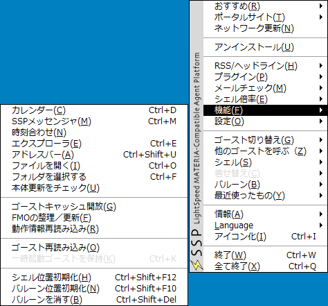

機能

このページでは、右クリックメニューの「機能」のサブメニューから実行できる、SSPの各種機能について解説しています。
なお、項目名はゴーストによって異なる場合があります（位置は変わりません）。
分かり難いと感じた時は、本体設定の「ゴースト(1)」からゴースト定義のメニュー表示をオフにできます。
このサブメニューには、開発モードがオンになっている場合のみ表示される項目がありますが、このページでは省略しています。
開発モードでのメニューとその機能については、「開発者向けヘルプ」のページをお読みください。
各項目の解説
クリックでその項目の説明へ。

1,カレンダー
SSPに付属のスケジュール管理ツールを起動します。
⇒詳しくは「カレンダー」のページをご覧ください。
2,SSPメッセンジャー
SSPに付属のメッセンジャー機能を起動します。
⇒詳しくは「SSPメッセンジャ」のページをご覧ください。
3,時計合わせ
OSの現在時刻設定を、外部サーバとの通信によって正しい時刻に修正します。
動作環境によっては無効または無意味です。
時計合わせに使用するサーバは、本体設定の「接続(1)」から設定できます。
4,エクスプローラ
ゴーストやバルーン、シェル、ヘッドライン、プラグイン等を管理するエクスプローラを起動します。
⇒詳しくは「エクスプローラ」のページをご覧ください。
5,アドレスバー
アドレス入力ボックスを開き、打ち込んだurlにあるファイルをダウンロードし、インストールを試みます。
基本的にブラウザ上のリンクをドラッグ＆ドロップしてインストールする場合と同様です。
ブラウザの挙動などで、リンクからのＤ＆Ｄ動作がうまく行かないような場合に用います。
6,ファイルを開く
ファイル選択ダイアログを開き、選択されたファイルをSSPが開こうとします。
基本的にゴーストに対してファイルをドラッグ＆ドロップしたのと同じです。
Wine環境などで、Ｄ＆Ｄ動作がうまく行かないような場合に用います。
7,フォルダを選択する
フォルダ選択ダイアログを開き、選択されたフォルダをSSPが開こうとします。
基本的にゴーストに対してフォルダをドラッグ＆ドロップしたのと同じです。
Wine環境などで、Ｄ＆Ｄ動作がうまく行かないような場合に用います。
8,本体更新をチェック
SSPの更新をチェックし、更新があればダウンロード確認ダイアログを開きます。
本体更新については、「本体のバージョンアップ」のページもお読みください。
9,ゴーストキャッシュ開放
メモリ上にあるゴーストキャッシュを開放（メモリ上に保持しなくする）します。
自動管理なので普段は使用する必要はありません。
長時間多ゴーストを切り替えながら使用して、メモリ消費が激しくなってきた場合などに使用します。
ゴーストキャッシュは多ゴースト起動時に、一部ゴーストのみ切り替え・終了した場合に、そのゴーストの情報を一定時間メモリ上に保持しておくことで、再起動時間を節約するしくみです。
本体設定の「ゴースト(1)」から設定ができます。
10,FMOの整理／更新
他のアプリケーションとの連携に使用するSSPの情報を、整理・更新します。
基本的にSSP単体で使用中は使う必要がありません。
SSTP通信を使う他のアプリケーションと同時使用している時に、SSTPが正しく届かないといったトラブルの際に使用すると解決する場合があります。
11,動作情報再読み込み
読み込んでいるゴースト、バルーン、ヘッドライン、プラグインなどのファイルすべてを読み込み直します。
起動中に各種ファイル群を直接移動、削除などした場合に、それを反映する目的で使用できます。
エクスプローラのファイル->再読み込みを全種類行うのと同じです。
12,ゴースト再読み込み
起動中のゴーストをリロードします。
13,一時起動ゴーストを保持
SSTP等で指示されて一時起動したゴーストを、そのまま完全に読み込んで起動状態を維持します。
14,シェル位置初期化
メニューを開いているゴーストの表示位置を、初回起動時の位置に戻します。
ゴーストが画面外に飛び出してしまった場合等に使用すると復帰できるかもしれません。
15,バルーン位置初期化
メニューを開いているゴーストのバルーンの表示位置を初期化します。
バルーンが画面外に飛び出してしまった場合等に使用すると復帰できるかもしれません。
16,バルーンを消す
メニューを開いているゴーストの、全キャラクターのバルーンを強制的に閉じます。
ショートカットキーの「Ctrl-Shift-Del」でも実行できます。
ただし、選択肢表示中など、バルーンを閉じられない場合があります。